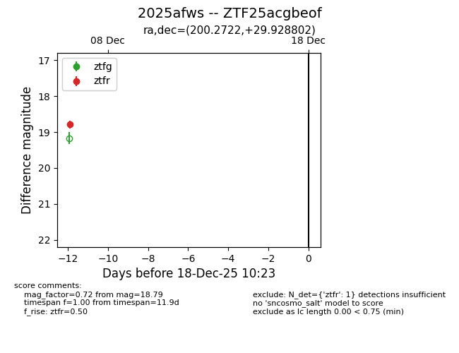
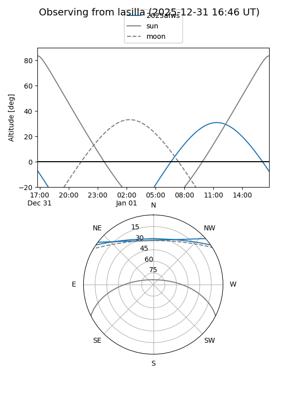
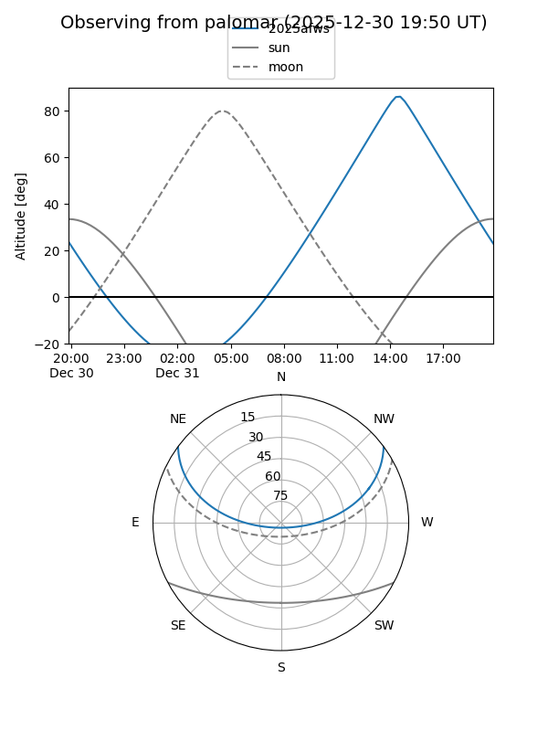

2025afws
Target 2025afws at 2025-12-31 18:00
Aliases and brokers:
FINK: link
Lasair: link
ALeRCE: link
TNS: link
YSE: link
alt names
ZTF25acgbeof (ztf,fink_ztf)
2025afws (tns,yse)
Coordinates:
equatorial (ra, dec) = 200.2722,+29.92880
equatorial (HMS+DMS) = 13:21:05.32,+29:55:43.69
galactic (l, b) = (57.9420,+82.91282)
Flags:
Photometry:
last ztfr=18.79
1 ztfr detections
Lightcurve

Visibility


Additional plots